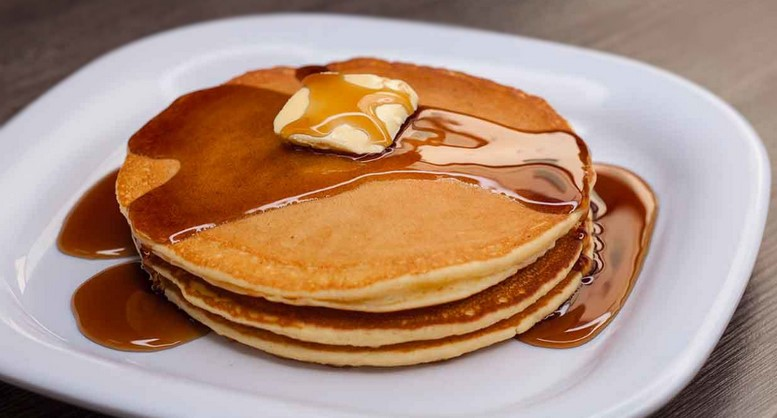

Home

Pancake Recipe
Description
Pancakes are a popular breakfast dish made from a simple batter of flour, eggs, milk, and baking powder. They are cooked on a griddle or frying pan and served with a variety of toppings such as syrup, butter, and fresh fruit.
You'll Love it.
Ingredients
- 1 cup all-purpose flour
- 2 tablespoons sugar
- 1 teaspoon baking powder
- 1/2 teaspoon baking soda
- 1/4 teaspoon salt
- 1 cup buttermilk
- 1 large egg
- 2 tablespoons melted butter
Steps
- In a large bowl, whisk together the flour, sugar, baking powder, baking soda, and salt.
- In a separate bowl, whisk together the buttermilk, egg, and melted butter.
- Pour the wet ingredients into the dry ingredients and stir until just combined. Do not overmix; it's okay if there are a few lumps.
- Heat a griddle or frying pan over medium heat and lightly grease it with butter or cooking spray.
- Pour 1/4 cup of batter onto the griddle for each pancake. Cook until bubbles form on the surface and the edges look set, about 2-3 minutes.
- Flip the pancakes and cook for an additional 1-2 minutes, or until golden brown and cooked through.
- Remove the pancakes from the griddle and keep warm. Serve with your favorite toppings such as syrup, butter, and fresh fruit.